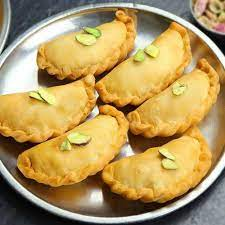

Gugara is a traditional Indian snack popular in the region of Gujarat. These crispy and savory treats are made with chickpea flour and flavored with a variety of spices. Gugara is a delightful snack that can be enjoyed on its own or served with chutneys and sauces for dipping. Follow this simple recipe to make your own batch of delicious Gugara at home.
Ingredients:
|
 |